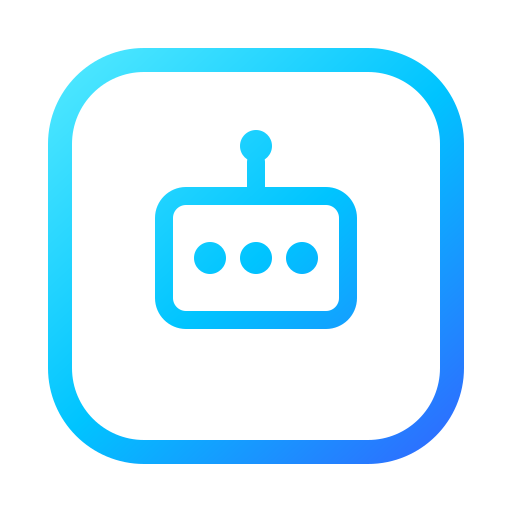

ダブルクリックだけでRDSが起動 — ポータブル1ファイル
概要
NMOS Simple RDS Studioは、AMWA IS-04 Registration & Discovery SystemをWindows PC上でそのまま起動できる、1つのポータブル.exeです。プロダクション品質のIS-04レジストリであるsony/nmos-cppと、Electronベースのリアルタイム監視ダッシュボードを1本のexeにまとめています。サーバー構築も設定ファイルの編集もインストールも不要 — ダウンロードしてダブルクリックするだけで、NMOSネットワークにRDSが立ち上がります。
すでに稼働中のRDSがある場合は、新しくレジストリを起動せずに読み取り専用モニターとして接続することもできます。スプラッシュ画面がmDNSでネットワーク上のRDSを自動検出し、ワンクリックで接続可能です。どちらのモードでも、ノード・センダー・レシーバー・フロー・コネクションマップをダッシュボードでリアルタイムに確認でき、生のJSONを読む必要はありません。
主な機能
クイックスタート
.exeをダウンロード
GitHub Releasesページから最新のポータブル.exeを取得します。インストール不要、Windows x64対応（ARM64もx64エミュレーションで動作）。
起動してモードを選択
ダブルクリックで起動し、新しくRDSを立ち上げる「Launch」か、既存RDSに接続する「Monitor」を選択します。
（Launchモードの場合）ネットワークを設定
ウィザードでネットワークインターフェース・ポート・ドメイン・プライオリティを設定します。初回起動時はWindowsファイアウォールの許可ダイアログが表示されるので、プライベート・パブリック両方にチェックしてください。
ダッシュボードで監視
Overviewでノード・センダー・レシーバー・フローの状況を確認し、Mapで接続関係を可視化。Ctrl+Kでリソースを横断検索できます。